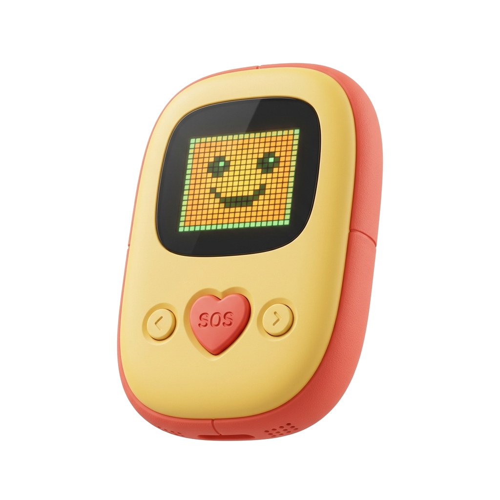
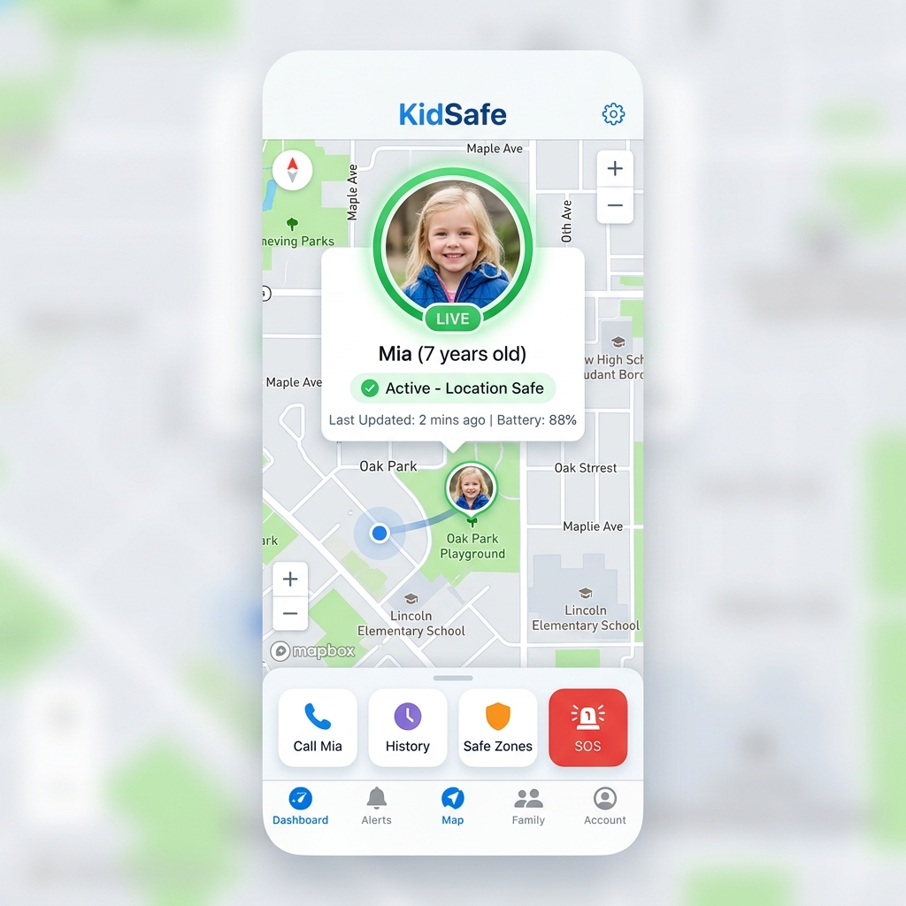
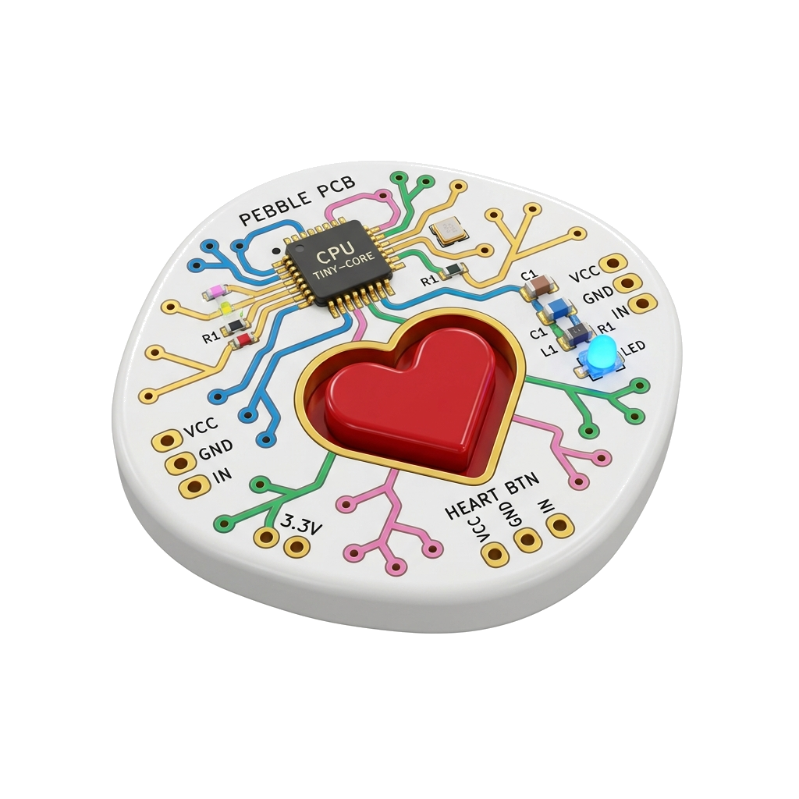

Sniggle is the adorable, screen-free cellular companion that lets parents locate and talk to their kids—without the risk of screen time addiction, cyberbullying, or internet distractions.
No Wi-Fi Needed
Kid-Proof Build
Playtime Battery

Designed to be safe from digital hazards. Your child gets tracking and quick contact, but stays protected from screen time addiction, cyberbullying, and internet hazards.
Powered by dedicated low-power cellular modules (LTE-M / NB-IoT) that ping live locations directly to the parent app, even in areas without standard Wi-Fi.
A single, highly tactile SOS button. If pressed, it initiates a high-priority alert that immediately pings the parent companion app and sets the tracking interval to high-frequency.
See how Sniggle instantly bridges the gap between your child and your smartphone without exposing them to screen distractions.
Click the red heart-labeled SOS button on the Sniggle device mock-up to trigger a simulation of a child requesting immediate contact.
Watch the flashing status LED and cellular wave animations transmit the location packet over LTE-M networks.
See the alert pop up on the parent companion app, overlaying the live GPS location with direct voice call capabilities.

Manage your child's safety in real-time. Our companion smartphone app (iOS & Android) gives you full administrative control with a clean, easy-to-use interface.
See exactly where your child has walked throughout the day with historical breadcrumbs.
Draw safe zones (like home, school, or a friend's house) and get alerts if they exit or enter.
Mute alerts and lock button reactions during school hours to help them focus in class.
We are committed to building in public. Follow our progress from architecture to physical assembly line validation and shipping.
We define what the device will do, design initial 3D models, select cellular modules and MCUs, and launch a teaser website to start building our audience.
We build early, rough prototypes using basic off-the-shelf dev boards and write the initial firmware to prove the LTE-M cellular tower connection works.
We design and manufacture our first custom-designed circuit boards (PCBs) to fit the compact casing size, testing internal batteries and antenna performance.
We manufacture casing using steel injection molds, perform drop/waterproof durability testing, and submit devices for regulatory certifications (FCC/CE).
We run a pilot assembly test at the factory, lock down the release candidate software, film a demo video, and open up transactional pre-orders.
We manufacture the first commercial batch of 1,000+ units, launch companion parent mobile apps in the App Store, and transition to a full store.
| WBS Code | Phase | Category | Task Description | Timeline | Status |
|---|
As part of our commitment to transparency, we are inviting our waitlist community to shape final hardware choices. Cast your vote on the core launch color you want to see manufactured in Phase 4!
Waitlist members receive priority surveys to select final silicone bumper options, lanyard attachment colors, and app companion widgets.

Join the waitlist today. Get exclusive, behind-the-scenes updates as we transition through engineering validation (EVT) and design validation (DVT), plus locked-in early bird pre-order discounts.
Equipped with low-power wide-area network (LPWAN) modules utilizing LTE-M (Cat-M1) and NB-IoT. These bands operate on low frequency with exceptional building penetration, ensuring location telemetry transmission where standard smartphone bands fail. The device features an integrated eSIM profile for cross-carrier roaming.
Driven by an ultra-low power ARM Cortex-M33 MCU. Optimized state-machine firmware sleeps at 15uA, waking to send coordinate bursts. Incorporates a 450mAh rechargeable Li-Po battery with safety heat shields and over-current protection, delivering up to 48 hours of normal operation on a single USB-C charge.
Crafted from medical-grade, hypoallergenic polycarbonate-ABS with a co-molded silicone bumper. IP67 rated dust-proof and waterproof (submersed up to 1m for 30 minutes). Certified for drop durability from heights up to 1.8 meters on concrete. Built entirely screen-free to eliminate blue light, screen fractures, and distractions.